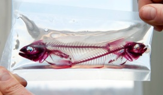

research interests & ongoing projects

There are three active areas of research in which students and volunteers at PCOM may participate in my lab; 1) Comparative Vertebrate Anatomy, 2) Variation in Human Anatomy, 3) Paleontology and Evolutionary Biology, and most recently 4) Collaborative work with Osteopathic Physicians.
Tools and data types include histology, radiography, computed tomography, dissection, photography, illustration, and extensive literature reviews. Independent projects are encouraged that seek to answer questions about vertebrate form and function. Thus, if you have a desire to study a particular system or organism, I will work with you to develop a project.
Active research in collaboration with students and postgraduates
These projects allow students to look at ontogeny (growth and development) and phenotypic variation (the way things look) of the skeleton as exhibited under various growing conditions. Students participating in these projects will utilize recent fishes as the model organism.
These projects are primarily cadaveric based as we examine phenotypic variation of the human skeleton. No two humans are exactly alike and the variation observed may be clinically relevant, thus important to document and describe. Independent projects about human development, form, and/or function are encouraged.
Variation in Human Anatomy
Paleontology and Evolutionary Biology
For these projects, we also are are looking at ontogeny and phenotypic variation of the skeleton but include a deep time component and often focus on resolving the relationships of the organisms in question. Most projects include fossil and recent fishes as the model organism.
Comparative Vertebrate Anatomy
My research combines the disciplines of paleontology, comparative anatomy, and development to formulate and test phylogenetic hypotheses of vertebrate interrelationships. I am particularly concerned with assessing the role that fossils play in the interpretation of modern biodiversity and phylogenetics, as well as the role that phenotypic variation plays in the interpretation of vertebrate fossils and systematics. My studies include morphological changes across ontogeny and over deep time,
which offer a way to investigate pattern and process in evolution, and help to generate more comprehensive hypotheses about how form and function interact.
Much of my research has focused on cartilaginous and bony fishes. Fishes are a practically ubiquitous group of vertebrate with the potential to help formulate hypotheses for every other group of vertebrate known. With the propensity for an even distribution across a vast geographic area, biostratigraphic data for other vertebrates can be enhanced dramatically. I make extensive use of museum collections worldwide for my specimens based research and collaborate with several colleagues for global field based research.
Collaborative Work with Osteopathic Physicians
In collaboration with D.O. faculty members of the Department of Osteopathic Manipulative Medicine at PCOM, we look to supervise students interested in pursuing research projects that combine information about variation of human form and the standardization of OMT protocols to treat somatic dysfunction.
